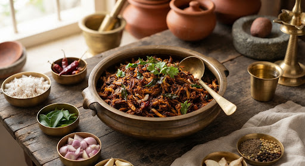

Oyster • Karnataka Coastal
timer
20 Mins • 165 kcal
Coastal Oyster Mushroom Sukka
ಕರಾವಳಿ ಸಿಂಪಿ ಅಣಬೆ ಸುಕ್ಕ
Serves
3-4
Tender shredded oyster mushrooms dry-roasted in freshly ground byadgi chillies, roasted coconut, and fragrant curry leaves.
menu_book
Key Botanical Ingredients
Heritage Prep
- 200g Fresh Oyster Mushrooms
- 1/2 cup Freshly grated coconut
- 4-5 Roasted Byadgi chillies
- Coriander, cumin & fennel
- Fresh curry leaves & onion
- Cold-pressed coconut oil / ghee
Step 1:
Dry roast whole spices & chillies; coarsely grind with grated coconut.
Step 2:
Sauté curry leaves and onions in coconut oil until translucent golden.
Step 3:
Add shredded oyster mushrooms; cook on high heat 4 mins as moisture evaporates.
Step 4:
Toss with coarse spiced coconut mixture and finish with fresh lime.